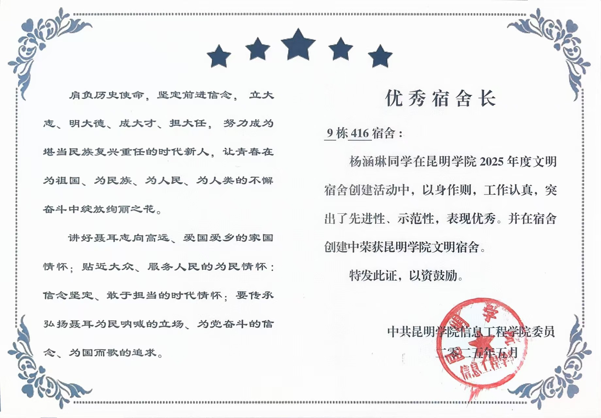

杨涵琳同学在昆明学院2025年度文明宿舍创建活动中，以身作则，工作认真，突出了先进性、示范性，表现优秀，荣获“优秀宿舍长”称号。同时，所带领的9栋416宿舍被评为“昆明学院文明宿舍”。
宿舍长不是什么“官”，更像是一个协调者、服务者。从提醒值日到调解小矛盾，从带头学习到关心每位室友的情绪，这一年我学会了如何倾听、如何沟通、如何在集体中找到共识。获得“优秀宿舍长”称号让我很惊喜，但更让我骄傲的是：毕业以后，416的每个人都会记得这个干净、温暖、互相扶持的小家。这份经历让我明白——责任感不是挂在嘴边的词，而是每一次主动拿起扫把、每一次为室友带饭、每一次深夜谈心时，心里那份“我们一起变得更好”的念头。